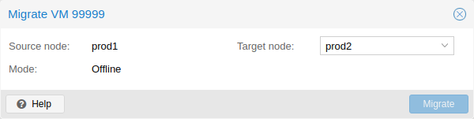

If you have a cluster, you can migrate your VM to another host with
# qm migrate <vmid> <target>
There are generally two mechanisms for this
If your VM is running and no locally bound resources are configured (such as
devices that are passed through), you can initiate a live migration with the --online
flag in the qm migration command evocation. The web interface defaults to
live migration when the VM is running.
Online migration first starts a new QEMU process on the target host with the incoming flag, which performs only basic initialization with the guest vCPUs still paused and then waits for the guest memory and device state data streams of the source Virtual Machine. All other resources, such as disks, are either shared or got already sent before runtime state migration of the VMs begins; so only the memory content and device state remain to be transferred.
Once this connection is established, the source begins asynchronously sending the memory content to the target. If the guest memory on the source changes, those sections are marked dirty and another pass is made to send the guest memory data. This loop is repeated until the data difference between running source VM and incoming target VM is small enough to be sent in a few milliseconds, because then the source VM can be paused completely, without a user or program noticing the pause, so that the remaining data can be sent to the target, and then unpause the targets VM’s CPU to make it the new running VM in well under a second.
For Live Migration to work, there are some things required:
Conntrack state migration is considered best-effort only and might not work, as it heavily depends on the network setup. For example, setups using source address masquerading (SNAT) on the host will most likely not work.
Conntrack is a Linux kernel mechanism to enable a stateful firewall by tracking individual connection. When live migrating running VMs, active in- and/or outbound connections might get interrupted as soon as the VM starts running on the target host, as the new host node does not have the same conntrack entries and thus the firewall can drop packets.
Conntrack state migration copies all conntrack entries on the host for the live-migrated VM to the target node and afterwards flushes the migrated entries from the conntrack table on the source node.
If you have local resources, you can still migrate your VMs offline as long as all disk are on storage defined on both hosts. Migration then copies the disks to the target host over the network, as with online migration. Note that any hardware passthrough configuration may need to be adapted to the device location on the target host.